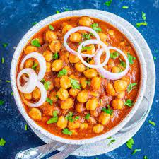

My Favorite Recipes

Chana Masala
A spicy and tangy chickpea curry.
Category: Indian
How to Make
- Sauté onions, garlic, and spices.
- Add tomatoes, chickpeas, and cook until flavors meld.
- Garnish with fresh cilantro and serve with rice or naan.

Palak Paneer
A creamy spinach and cottage cheese curry.
Category: Indian
How to Make
- Blanch spinach and puree it.
- Sauté onions, tomatoes, and spices.
- Add spinach puree and paneer cubes.
- Cook until the curry is creamy, and serve hot.